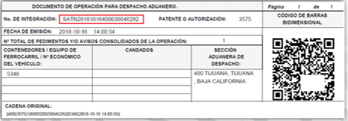

¿Que es el PITA?
El Proyecto de Integración Tecnológica Aduanera es una solución integral que plantea:
Automatizar, facilitar y agilizar los procesos de entrada y salida de mercancía en las aduanas del país.
A través del aprovisionamiento y actualizaciones de diferentes dispositivos.
¿En qué consiste el despacho en carriles automatizados?
- Presentar la mercancía en carriles automatizados, con el Gafete Único de Identificación para Transportistas.
- Integración anticipada de la operación. Se genera un Número de Integración (DODA-PITA).
- Activación del MSA mediante tecnología de radiofrecuencia (RFID)
Código de barras lineal VS RFID
Código de barras lineal
- Necesita línea de visión directa
- Requiere intervención humana para colocarlo en el lector
- Lectura a corta distancia
- Lectura más lenta
- Incapacidad de escritura
- Capacidad limitada
- Identificación estandarizada
- Necesita lectores infrarrojos
- Lectura sólo en superficie, puede afectarse fácilmente
RFID
- No requiere línea de visión directa
- No requiere intervención humana
- Lectura a mayor distancia
- Lectura cinco veces más rápida
- Capacidad de lectura y escritura
- Mayor almacenamiento de datos
- Identificación única
- Necesita antenas lectoras
- Lectura a través de diversos materiales, soporta ambientes agresivos
Proceso previo al despacho con PITA
Carriles con vehículos de carga
Proceso de despacho con RFID
Pantallas Informativas
Plataforma
Dispositivo que muestra a los usuarios la información y tiempo de atención de las operaciones con reconocimiento aduanero.
Panel de zona de amarillos
Dispositivo que despliega el resultado del MSA en la zona de amarillos e indica a vehículos que se encuentren en dicha zona el andén asignado.
Dispositivo móvil
Los equipos de inspección móvil (toughpad)permiten atender los eventos que se presenten en la zona de amarillos, desde indicar la causa por la que se envió a amarillos hasta someter al MSA una operación que se encuentre en dicha zona.
¿Cómo prepararme para operar con PITA?
¿Qué debo hacer como figura aduanal autorizada para operar con PITA?
-
Validación del pedimento:
- Generar COVES en la Ventanilla Única de Comercio Exterior (VUCEM) para remesas de consolidados
- Pagar los pedimentos que se van a presentar a modulo.
-
Generación del Número de Integración:
- Capturar la información necesaria para presentarse a modular: Aduana/sección, CAAT, contenedores, identificación del transporte, pedimentos a modular, Número de gafete, etc.
¿Cómo generar el número de integración PITA?
Los usuarios pueden generar un número de integración para despacho aduanero PITA a través de los siguientes procesos:
- PORTAL DEL SAT
- WEB SERVICES
PORTAL SAT
Para obtener una integración PITA en el portal del SAT se deberá realizar lo siguiente:
Seleccionar “Despacho Aduanero PITA”, capturar número de gafete, etc.
WEB SERVICE
Para generar un PITA en web service, se deberá considerar en el XML el tipo de despacho aduanero y el número de gafete de acuerdo a la siguiente especificación:
Errores que pueden presentar en la generación de un DODA PITA
- Estructura del número de gafete único inválida
- El gafete único no existe
- El gafete único esta inactivo
- El gafete único no esta vigente
DODA vs PITA
DODA

PITA
Consulta
Excepción de operaciones DODA y PITA
Las siguientes operaciones quedan exceptuadas para las operaciones de DODA y PITA
- Operaciones de tránsitos.
- Operaciones de Copia simple (Regla 3.1.18).
- Operaciones efectuadas por transporte ferroviario (SICOFE Y MUF).
- Operaciones con Aviso electrónico de importación y exportación.